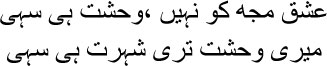

18
It is she I am reminded of by the sky, Asad,
Her cruelty was a copy of God’s ruthlessness
 he garden of Rizwan. No, Mirza sahib, I did not have the right to enter the garden of paradise, even its aroma never made its way to me. Still I prayed to Allah—snatch this black soul, this Saadat Hasan Manto, from the world, for he always forsakes fragrance to chase bad smells. He hates the glowing sun and always enters the dark warren of streets. Kicking away whatever is decent and civilized, he embraces the naked truth. He prefers the bitter fruit. Instead of being attracted to women in their homes, he wants to attain the seventh heaven of happiness with whores. He laughs when everyone else cries, and when they smile, he weeps. Manto tries to cleanse features blackened with grime because he seeks the original face that lies beneath. Save this devil, this misguided angel, but once, O Lord.
he garden of Rizwan. No, Mirza sahib, I did not have the right to enter the garden of paradise, even its aroma never made its way to me. Still I prayed to Allah—snatch this black soul, this Saadat Hasan Manto, from the world, for he always forsakes fragrance to chase bad smells. He hates the glowing sun and always enters the dark warren of streets. Kicking away whatever is decent and civilized, he embraces the naked truth. He prefers the bitter fruit. Instead of being attracted to women in their homes, he wants to attain the seventh heaven of happiness with whores. He laughs when everyone else cries, and when they smile, he weeps. Manto tries to cleanse features blackened with grime because he seeks the original face that lies beneath. Save this devil, this misguided angel, but once, O Lord.
No, my brothers, the lord did not respond to my pleas. What was I to do? I began to accumulate stories in my pocket. Others stored their stories in their head, but mine were in my pocket. Do you know why? I used to take advance payment for my stories, you see. Just like money, my stories also came out of my pocket. People used to consider this man a magician. Where does he get so many stories? Do you suppose there’s a dearth of stories, for heaven’s sake? Unless you’re blindfolded, you can find a story any and everywhere. Provided you’re not carrying a measuring tape, every man’s story is your story. That was why neither liberals nor mullahs could tolerate me, for they always had measuring tapes in their hand; only those stories that could be measured by their yardstick could be written—the rest had to be purged from life. How could I explain to them that Manto had never wanted to project himself as a writer? A ramshackle wall, the plaster flaking off, and unknown patterns being created on the ground—I was a wall just like that. I am the fifth wheel attached at the back of the car, which may or may not come in use. Believe me, I was never at peace with myself; I never felt fulfilled. There was a constant emptiness somewhere, my brothers, as though something were missing, as though I were incomplete. My temperature would permanently be one degree above normal. I seemed to be trapped in a maelstrom. You might laugh at this, but I feel that people whose temperature is always normal cannot even love a tree or a river, leave alone write stories or poetry. Take it from me, my brothers, nothing can be created, not even love, without madness, without abnormal behaviour. Love cannot be measured out; if you give me this, I will give you that, this isn’t love, this is household management—and the funny thing is, people mistake such calculations for love. I have seen real mohabbat, real love in Hira Mandi, on Foras Road—red light areas, all of them. Here people could go bankrupt over love, kill too. But the way the gentlemen saw it, they were all whores, they conducted transactions with their bodies. What did they know of mohabbat? No Mirza sahib, don’t look at me with such helpless eyes. I know that you, you alone, had succeeded in getting to the hearts of the tawaifs. I saw it too. Flesh on sale in one kotha after another, while the glow within the flesh—those fragrant hearts—burnt themselves to cinders because of love.
I began to frequent Hira Mandi when I went to Lahore to work with Bari sahib. It was then that I came across these women to whom the word ‘home’ was nothing but a dream throughout their lives. Each of them was unique, with a different story. Tolstoy had said that all happy families are alike, but every unhappy family is unhappy in its own way. When I entered the kaleidoscopic world of Hira Mandi, I used to feel as though I was holding a hundred different beating hearts—if one was a Malkosh, another was a Bihag, here a Bhairavi and there a Purvi—what a festival of ragas and raginis. The ragas hold all the sounds—of tears and of blood, of wails of despair, and of knives being whetted. I visited Hira Mandi with Bari sahib, of course, but also on my own. The whores were always there, but I would also chat with the pimps, the flower sellers, and the paan vendors. They would greet me joyously, ‘Manto bhai is here, now we’ll have some fun.’ And, thanks to your blessings, my friend, no one could match me when it came to having fun. When the fun died down though, I saw that the barren patch of land within Manto had not changed; not a single blade of grass had grown on it. But then I always knew there would never be grass on that fallow land. Observe everything as long as you live, and write down what you see. You may find oases within the stories, it’s just that they will be full of thorns and thistles.
We used to visit Hira Mandi the way badshahs did. Let me tell you what happened one day. Bari sahib and I had buttonholed the writer Balwant Garg. Since Balwant was an out-and-out innocent, we didn’t tell him where we were taking him. We hired a Peshawari tonga. ‘Where are we going, Manto bhai?’ Balwant kept asking.
Bari sahib twinkled a smile. ‘You can’t be a writer if you spend all your time in a newspaper office, Balwant,’ I told him. ‘Let’s misbehave a little tonight.’
— Meaning?
— Balwant, for a change do as Manto says tonight. He cannot take you all the way to hell, after all, you’ll still remain at a slightly higher level. Bari sahib burst out in laughter.
Our tonga stopped in front of Shahi Masjid. The marketplace for live flesh was right next door. Darkness had fallen, and whores, pimps, flower sellers and kulfi vendors lined the road. The aroma of tikka kebab pervaded; strains from a sarangi wafted in on the breeze, a couple of lines from a thumri too. Grabbing my arm, Balwant said, ‘Where have you brought me, Manto bhai?’
— Hira Mandi. Never heard of it?
He stared at me blankly.
— Are you afraid?
— No. Balwant gulped. ‘You’re with me, right?’
— Have faith, my friend, trust in Manto.
Meanwhile, Bari sahib had started bargaining with a Pathan pimp. Strange man! He couldn’t stop haggling even for a good time. A fucking armchair revolutionary, he couldn’t do anything without counting his pennies. That’s why I couldn’t stand the communist swine. As keen as anyone else on having a good time, they would even sneak out for a bit of fun, but with the hammer and sickle inscribed on their forehead—and they would haggle over everything. If you did anything outside their scheme of things, you were a reactionary. Pimps of the Revolution. Who gave you the responsibility of making everyone equal? Only Sufi dedication can achieve that. This is the path of the fakir and the dervish, there’s no room here for Communism. Commitment to equality for all is not for those whose objective is to seize power. Pardon me, my brothers, I have been talking drivel again; I’m a modernist, you see, I cannot even tell a story simply, the genie of lecturing never leaves me.
I told Bari sahib, ‘I’ve told you a hundred times that if you want to haggle, do it only for yourself.’
— But these sons of bitches …
— Are you or I any less of a son of a bitch? Did you forget? Bari sahib withdrew into a shell when I used profanities.
When the Pathan pimp heard what I said he perked up. ‘Come upstairs sahib, I have a terrific girl, prepared on a slow fire, ekdum dumpukht.’
It was our first time in that particular kotha. In a room on the first floor we saw a Pathan woman of about thirty-five, obviously the madame. Plump, a thick jasmine garland entwined in her hair, paan-reddened lips. Eminently pleasing, by any standards.
— What are you staring at, mian? She pretended anger.
I was no less of a devil. I played my piece too—a line of yours, Mirza sahib.

Without your love, I’ll accept exile
Let my exile bring you fame
— Kyabaat, wonderful! Jabbar … Jabbar mian …
— Yes, malkin? The response came from within the house.
— We have guests. Bring the glasses.
The glasses were brought. I asked Jabbar mian to get some soda and tikka kababs. Since Balwant didn’t eat meat, an omelette was brought for him. Jabbar took only ten minutes to make all the arrangements. Bari sahib had brought his Johnny Walker along. The whisky was poured into three glasses, along with soda and ice. I knew Balwant wouldn’t drink. Offering one of the glasses to the madame, I told her, stroking her thigh, ‘Have a drink, meri jaan.’
Her eyes pierced me like a dagger. Taking the glass, she said, ‘Do you know what the phrase “meri jaan” means, janab?’
— I do.
— Tell me then.
— Soorat aine mein tu dekh toh kya soorat hai, badzabani tujhe us mooh pein sazavar nahin. Your face in the mirror is a memory of such pleasure, profanities do not befit this pair of lips.
— Mir sahib, isn’t it?
— Yes, meri jaan.
— Woh toh kal der talak dekhta idhar ko raha, humse hi hal-e-tabah apna dikhey nah gaya. Oh, he kept looking at me so long, it was I who couldn’t bear to see my plight.
— Mashallah! Leaning towards her, I kissed her feet.
— What are you doing, mian?
— Love is in the feet. I said with a smile.
— How so?
— Have you not seen how Meera’s Giridharlal tends to Radha’s feet? We humans move downwards, kissing the lips first; but Mohan climbs upwards, kissing the feet to begin with. That is why our love dies eventually, while his love becomes a veritable festival of joy.
— Subhanallah! Who is this angel visiting Hira Mandi this evening?
Bari sahib burst out laughing. —Look, Balwant, what a miracle, the devil has turned into an angel in Hira Mandi.
The 35-year-old whore had gripped my arm, her eyes misting over as though I myself was Meera’s Giridharlal. ‘Where are the girls?’ I asked, clearing my throat.
She could not speak, disbelief surfacing in her eyes.
— Show us the girls. Are we supposed to pass the night like this? I finished my drink in a gulp.
As soon as the madame glanced at the Pathan pimp he disappeared, returning a little later with a young woman in a pink georgette sari. I observed her carefully. I noticed Balwant sizing her up too out of the corner of his eyes. She was quite skinny, her face painted garishly, with thick lines of kohl under her eyes. Winking at me, she asked—for the sake of saying something—‘Where are you coming from?’
— From your mother’s village.
— What? She stared at me with round eyes.
— Where have you come from?
— Er …
Leave alone talking to such women, you can’t even sleep with them. I rejected her. The pimp brought several girls in succession. I didn’t care for any of them. Bari sahib would be angry with me over this, every single time.
— What is it Manto, all we’ll do is go to bed with them, what’s all this interrogation for?
— You can go with one of them.
But I knew that even Bari sahib would not take any of them to bed without my approval.
The girl who came next was quite tall and bright; her smile could be called positively sensuous. But her eyes were hidden behind dark glasses. She sat before us as though she were reading the namaz. I quite liked her. I had questioned each of the others who had preceded her—none of them had been able to answer. Idiots, all of them. I felt this girl would succeed. ‘Can you solve a riddle?’ I asked.
— Yes, tell me.
— There was a woman named Bhuran. Her whims and fancies were different from everyone else’s. One day she wrote a letter to Mirza Mazhar Jaan-e-Janna, ‘I am restless for your love. But you love four people at the same time. I can never be that way. It is not right for a woman to love four people.’ Can you tell me what Mirza sahib’s reply was?
— It is far more religious to love four women rather than twelve.
I was astonished by her response. —How did you know?
The girl replied with a smile, ‘A Sunni loves four people—he honours the four Khalifas. And a Shia loves twelve—he is led by a dozen Imams.’
— Where did you hear this story?
The girl smiled without answering. I liked her. How can you spend the night with a whore whom you cannot talk to? But why did she have dark glasses on in the evening? I put the question to her.
She was a glib talker. ‘You are so handsome I am blinded, janab,’ she answered.
— Kyabaat! Sleeping with you will take me to heaven, meri jaan.
— Let me go first then. Bari sahib shouted. —Give me the opportunity to visit paradise before you, Manto bhai.
— I will, but let me see the truth first. I pulled the girl’s dark glasses off. Cockeyed, she was absolutely cockeyed. Returning her glasses, I said, ‘If you hadn’t put those glasses on, I would have gone to bed with you despite your squint. But I cannot tolerate lies, meri jaan. Get out of my sight, I cannot stand deception.’
This girl left as well. It was nearly eleven at night. More kebabs appeared. We had polished off five pegs each. As I was about to pour myself the sixth, the madame clutched my hand. ‘No more, janab.’
— Why not?
— Do as she says, Manto bhai. Balwant told me. —She has your interest at heart.
— My interest at heart? You don’t know these people, Balwant. She wants to keep the rest of the booze for the pimp. For heaven’s sake, just tell me if you want some for him, I’ll get you a full bottle. You don’t know these bitches.
I took a sip, and the madame grabbed my hand again. —For God’s sake, don’t drink anymore, janab. I haven’t seen anyone like you before.
— Really? There’s no one as beautiful as you either in this world. I ran my hand over her stomach; she did not stop me. Kissing her neck, I said, ‘You are Cleopatra. You are Helen. Did you know that? You didn’t. Take it from Manto.’
I spent the night at her kotha. I have no idea when Bari sahib and Balwant left. The madame sat with her arms around me. I was in a drunken haze—her tears encircled me like a dead river. When my stupor left me in the morning, I found myself lying with my head in her lap, with her eyes fixed on mine. I had an urge to weep, I don’t know why. Burying my face in her stomach, I sobbed loudly. She sat with her hand on my head, without asking a single question.
I took a bath at her kotha. She brought me a cup of tea and breakfast. With delight, I saw her real appearance for the first time. Her skin was pale now, but it was clear that her body had glowed like ivory and sandalwood once. Her eyes had dark circles under them, but these same eyes had once dazzled like emeralds. She was crumbling now, but once she had been as perfect as a chinar tree.
— What’s your name? I asked.
— Kanta.
— When did you come here?
— I cannot remember.
— What do you remember, Kanta?
— Nothing, janab.
— Don’t you remember anyone?
After a long silence, Kanta said, ‘I remember Khushia at times.’
— Who’s Khushia?
— My pimp. He used to bring customers for me.
— Is Khushia dead?
— I don’t know.
— You don’t know where he is?
— No.
— Then tell me about Khushia. I took her hand.
— Khushia misunderstood me.
— Why?
— Because I wasn’t embarrassed in his presence. Why should I be? He was Khushia, after all, he belonged to my kotha.
— What did Khushia do?
— You’d better leave now, janab, you shouldn’t be in this neighbourhood in the daytime. I need to sleep, too.
— Will you tell me about Khushia one day?
— I will. If you come back. But come alone, not with other people.
— Why not?
Kanta laughed—What can a whore have to say? She can only take her clothes off so that you can do whatever you like with her. Some people ask me my real name; some ask why I’m in this business. Pardon me, janab, I feel like pissing on these dogs’ faces. You’re here to fuck me, so fuck me. Why do you want to know me? You’re here for an hour—feast your eyes on my body, do what you have to, get the hell out. But you’ll come again, won’t you? To this day I don’t know why Khushia behaved the way he did, janab.